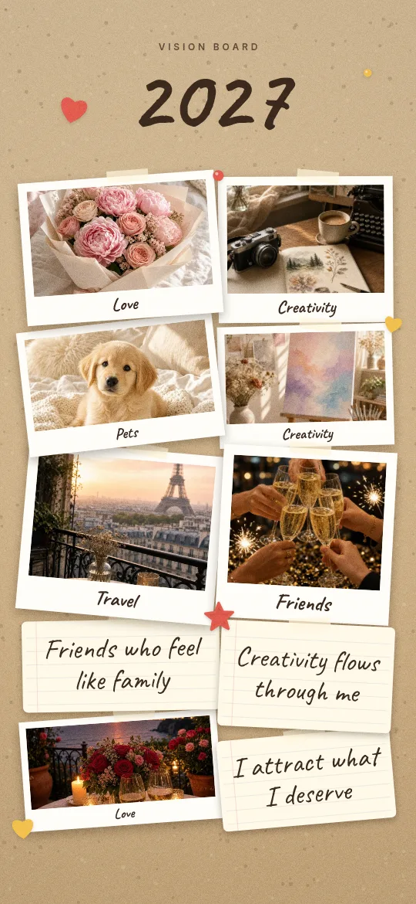
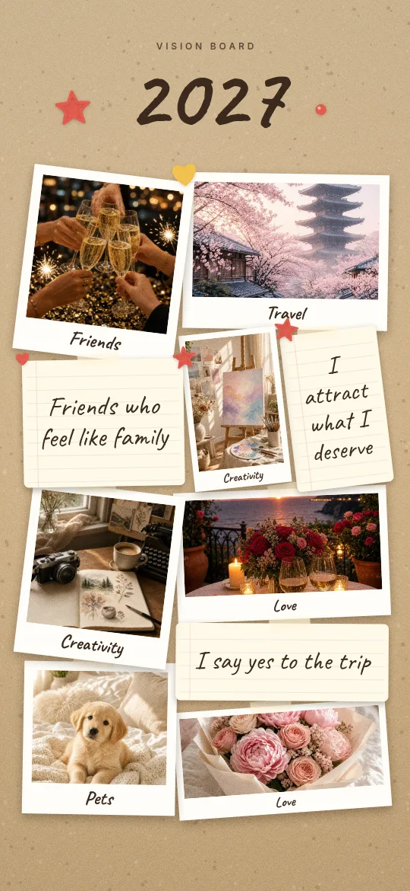

2027 AESTHETIC · POLAROID SCRAPBOOK
Polaroid scrapbook vision board for your lock screen
A cork board covered in polaroids, red pins and handwritten captions. The scrapbook look feels personal and nostalgic, which is perfect for travel, friends and memories you want to make in 2027.



The Polaroid Scrapbook look in one line
Warm cork, polaroid white, cherry red and mustard. Tilted photos with captions, lined note cards and pin stickers.
What to put on it
- Travel spots you want to visit
- Nights out with friends
- Date-night dinners
- Your creative projects
- A pet you love (or plan to get)
In Glowboard you just tap the goals you want (travel, money, love, style and more) and the matching photos and affirmations are added for you. You can also add your own photos. They stay on your phone.
Tips for a board you will actually look at
- Upload 2–3 real photos of your people. They look amazing in polaroid frames.
- Write captions like a diary: “Road trip with Em”.
- Shuffle until the tilts look natural.
- “Adventure finds me easily”
- “More laughter, more memories”
- “My art is worth sharing”
- “Loved out loud”
- “I say yes to the trip”
How to set it as your lock screen
iPhone: tap Save image (or long-press and choose “Save to Photos”). Open Photos, tap Share, then Use as Wallpaper. Android: open the image in Gallery or Google Photos, tap ⋮, then Set as wallpaper, then Lock screen.
FAQ
Is the scrapbook look free?
Polaroid Scrapbook is a Pro look. You can preview it with your goals for free.
Can I send my board to a friend?
Yes. Tap “Send this board to a friend” and they get a link that opens your board.
More 2027 looks


Glowboard is a free vision board wallpaper maker. There is no sign-up, and your photos never leave your device.